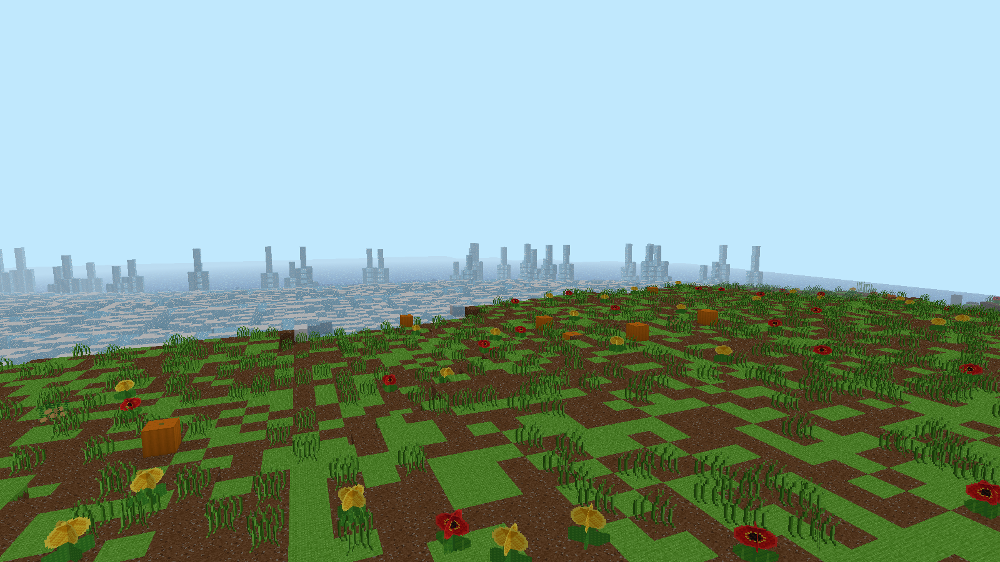

Captured in-game · Procedural Highlands & Glacial SeaVast, Seamless Worlds Built to Explore
Every world unfolds smoothly around you with zero lag spikes—even at full sprint or soaring in flight. Sunlight filters naturally through forest canopies, torches and electric lamps cast warm glow across deep caverns, and crystal rivers shift from dawn mist to starlit nights.
Seamless Exploration
Fluid 60+ FPS terrain streaming with sweeping vistas and atmospheric fog
Dynamic Sky & Water
Translucent rivers and glacial ice under a full celestial day/night cycle
Survival & Creative
True Survival with health, hunger & beds—or unlimited flight in Creative Mode